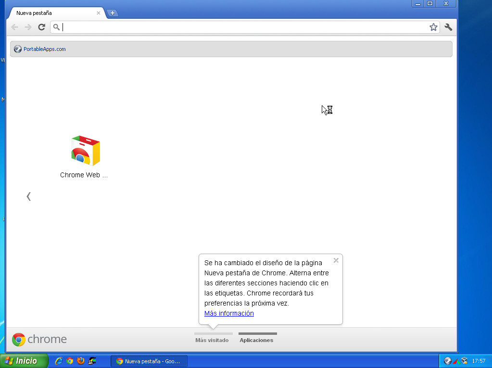
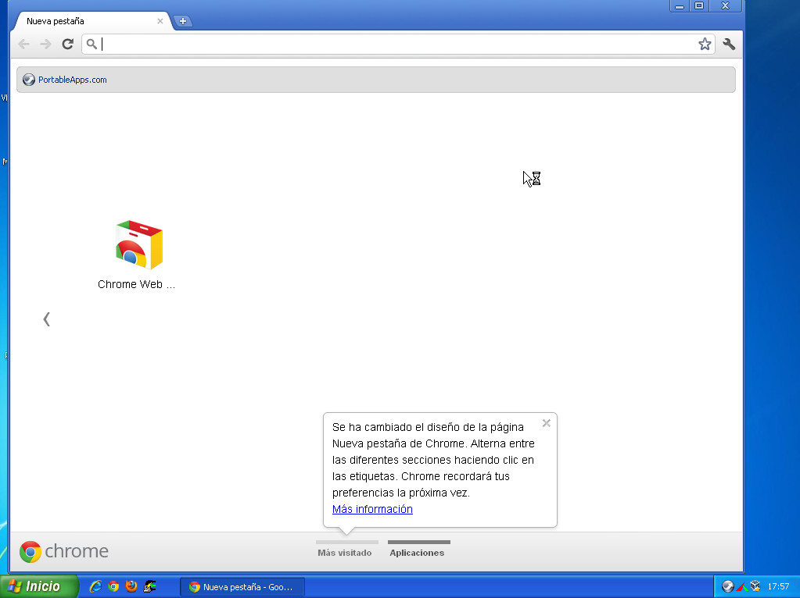

Universitat per a Majors
Windows
Instalación de programas
Apreta la tecla → para avanzar.

El sistema operativo Windows viene con muy pocas aplicaciones preinstaladas. Aquellas aplicaciones que no estén instaladas deberemos instalarlas nosotros mismos.
Programas que sí que vienen con Windows:
Hay muchas aplicaciones esenciales hoy en día en el manejo de un ordenador que no vienen incorporadas en el sistema operativo Windows. Por ejemplo:

Antes de instalar una aplicación en conveniente conocer la licencia con la cuál se distribuye, que básicamente indica las posibilidades que tenemos de instalar libremente la aplicación sin tener que mirar restricciones o pagar por la licencia.
Aplicaciones con licencia privativa/de pago:

Cambia de foto con las teclas: ↑ y ↓
Aplicaciones similares con licencia libre o gratuita:
Primero que nada deberemos tener un archivo que realizará el proceso de instalación del programa mediante un asistente de instalación. Este archivo lo obtendremos ya sea por un dispositivo en formato físico (un CD, un USB) o lo descargaremos de Internet.
La instalación de programas es un proceso delicado, que requiere privilegios de administrador de la máquina. Existe un método más sencillo, inocuo y útil para instalar aplicaciones llamado las Portable Apps.
Es un gestor de aplicaciones libres/gratuitas que nos realizará una instalación de los programas siempre dentro de una carpeta que nosotros definamos, evitando así el que podamos estropear cualquier aplicación ya existente.
Características:
¿Cómo lo utilizamos? Primero que nada bajamos el programa de PortableApps, lo instalamos, y una vez hecho esto ya podemos empezar a instalar cualquier aplicación.


Cambia de foto con las teclas: ↑ y ↓
Deberemos elegir un directorio donde se instalará absolutamente todo lo que hagamos con las PortableApps. Si queremos desistalar sólamente tendremos que borrar ese directorio.
Un sitio donde instalar podría ser en el Escritorio, en una nueva carpeta llamada PortableApps


Cambia de foto con las teclas: ↑ y ↓

Los margenes de párrafo podemos modificarlos para cada uno de los párrafos de nuestro documento.
Se establecen para cada párrafo y podemos visualizarlos seleccionando el párrafo y mirando la regla superior.
Para cambiar los márgenes de párrafo podemos hacerlo directamente desde la regla o entrando al menú Formato > Párrafo...


 

Cambia de foto con las teclas: ↑ y ↓
Cada dispositivo de nuestro ordenador tiene una capacidad, que puede ser excedida